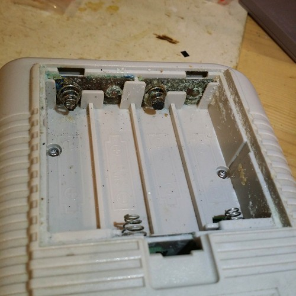
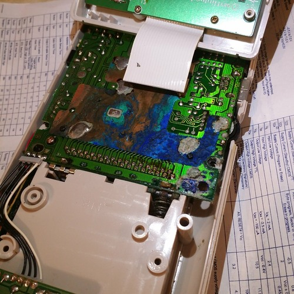
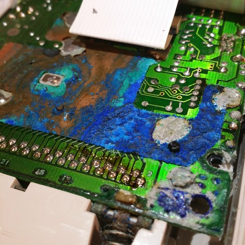
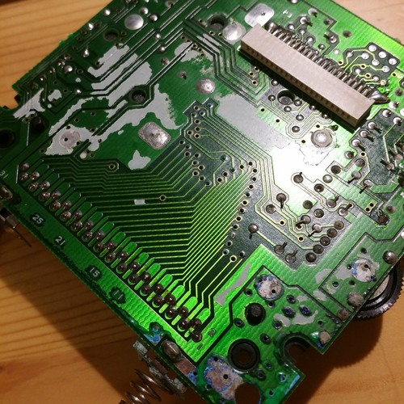

Copper oxides wonderful landscape of colors
I got a set of 4 Gameboys on Yahoo auctions Japan, I already fixed and upgraded by replacing its batteries by a Li-Ion battery with charger. My seller must have had very sweaty palms because all of the Gameboys reeked of an awful male sweat (worse than kendo helmets or boxing gym rented gloves if you see what I mean). And he was also very cheap when choosing his batteries, or unlucky, or careless, but all of 4 of the GB sufered from leaks to a different degree... but this sick puppy was the winner by far. Just have a look to those pictures.
Crystals of battery gunk everywhere, crusty and smelly

I was astonished by the colors, and though it meant a unlikely repair I still found this beautiful. The ultra-oxidized stuff is a copper shield (?) that runs at the back of this board (the back side) and make contact with front board (with screen and buttons) via spring contacts.

Closeup image: you can even see the "relief" (it's French and also English it seems) of the oxid, it's like a 3D small mountain. And the blue is truly beautiful

After peeling the back shield (was dead anyway, chuncks of formely-copper broke away while washing) and cleanup with salt & vinegar. The vias in the middle look dead but up to close inspection they look fine even if not in their prime. I'm more concerned with the other through-hole soldering, but I can redo those... hopefully